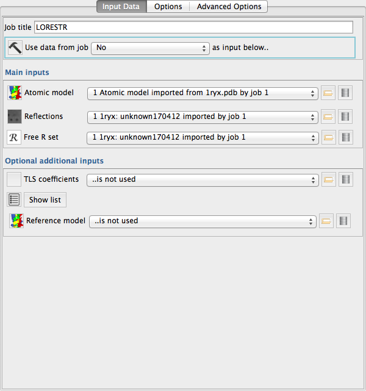
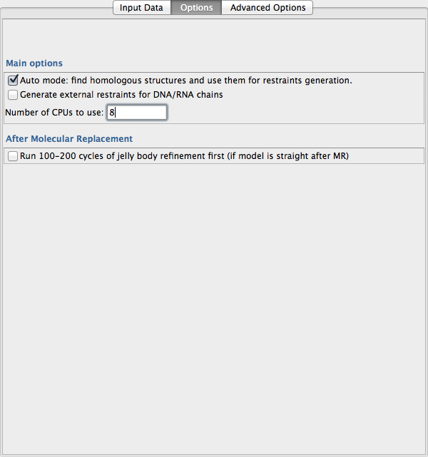
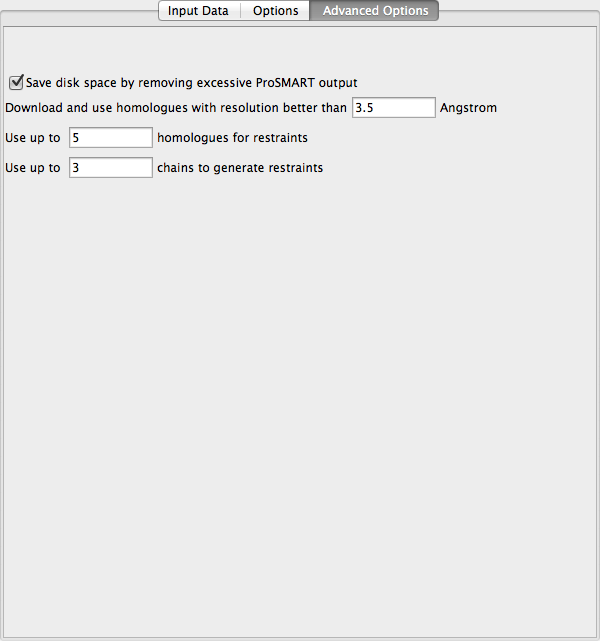
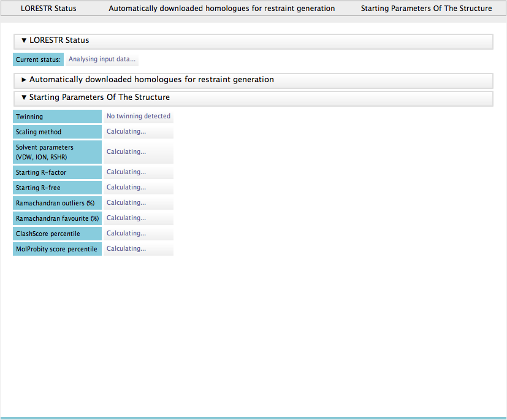
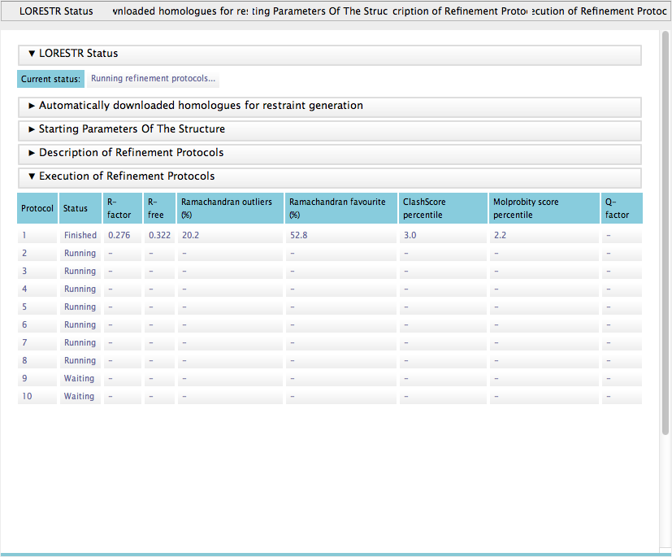
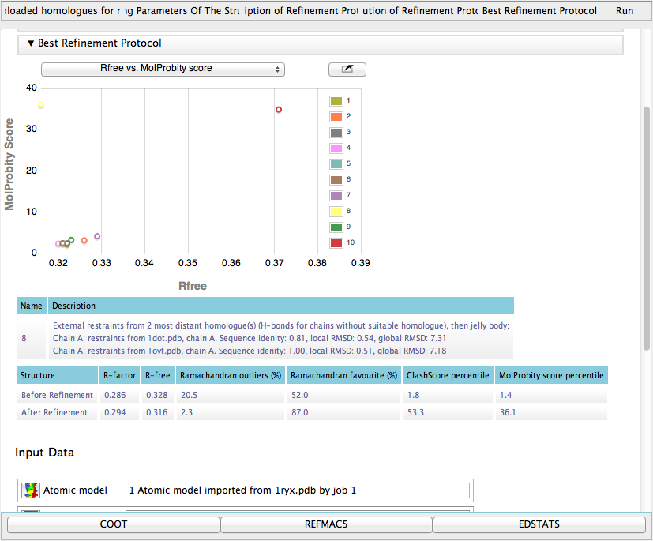

Low Resolution Structure Refinement Pipeline¶
Low Resolution Structure Refinement Pipeline (LORESTR) is a fully automated and easy-to-use tool.
The minimal input required is a PDB file containing the current model (the target structure) and corresponding diffraction data. In automatic mode, LORESTR extracts the sequences of all chains present in the PDB file and runs a BLAST search over the whole Protein Data Bank (internet connection required). It then downloads up to ten homologues that share at least 75% sequence identity and cover at least 75% of the protein chain (only homologues satisfying these criteria proved to improve refinement). LORESTR specifies for ProSMART hydrogen bond restraints to be used for any chains for which there are no close homologues found. Users can also manually supply any number of homologous structures.
After downloading homologues, the pipeline analyses the input data in order to determine the set of most appropriate refinement parameters. It checks whether the data are derived from a twinned crystal, in which case automated handling of twinning in REFMAC5 is enabled. The pipeline also tries standard and least-squares scaling options, selecting the one that performs better (gives lower Rfree) and figures out solvent parameters.
The pipeline then generates a number of refinement protocols, depending on the number of available homologous chains. If no homologues are supplied and no homologues are found during the BLAST search, the pipeline will just test the two protocols that do not require availability of external homologues, i.e. hydrogen bond restraints and jelly-body restraints. For all protocols for which external homologues are available, the pipeline runs one round of REFMAC5 refinement using the external restraints, before then executing a second round of refinement using only jelly-body restraints in order to allow the structure to relax into its new conformation (as this approach proved to be optimal in the vast majority of our test cases).
The pipeline supports multitasking and can run several jobs in parallel, should the user so wish. After running all jobs, LORESTR selects the best-performing protocol according to a quality indicator that depends on both Rfree and the MolProbity score, or just simply Rfree if MolProbity is not available from a local PHENIX installation (phenix.molprobity shall be in the $PATH for automated assesment of the structure quality).
Input¶

LORESTR input is simple: a target model for refinement and experimental data, including Rfree.
Also, you may provide optional file with TLS coefficients and any number of homologous structures for restraints generation. Please note, that if you are using auto mode (which is recommended default), the pipeline will automatically download homologous structures from the PDB, so you don’t need to provide them manually. However, you can use auto mode and manually supplied homologous structures simultaneously (for instance, when you have both unpublished structures of your protein and homologues deposited to the PDB).
Options¶

Auto mode: recommended default. In this mode pipeline extracts the sequences of all chains present in the PDB file, runs a BLAST search over the whole Protein Data Bank and downloads appropriate homologues for restraints generation. Internet connection is required for this functionality.
Generate retraints for DNA/RNA chains: please tick this box if you have DNA or RNA in your model
Number of CPUs to use: please specify number of processors for parallel execution of several refinement protocols.
Run 100-200 cycles of jelly body refinement: please tick this box if your model is straight after molecular replacements and has not been refined. The pipeline will figure out initial R-factors and depending on them decide how many jelly body cycles to run to improve fit of your model (may take up to several hours)
Advanced Options¶

Normally you don’t need to change the default values.
Save disk space by removing excessive ProSMART output: for large structures, ProSMART output could be up to a hundred or two hundred megabytes. As the pipeline runs up to ten (or more) protocols, that can easily go up to several GB of data per single pipeline run. By checking this box (default option is ON) you ask pipeline to remove all excessive ProSMART output (detailed results of structures analysis, scripts for visualisation programs, etc) and leave only restraints used for refinement. If you are interested in reusing ProSMART analysis data, uncheck this box.
Download homologues with resolution better than X: a simple treshold for downloading homologues in the pipeline “Auto” mode. Structures with resolution lower than this treshold will be ignored for restraints generation.
Use up to X homologues for restraints: maximal number of homologues for analysis. In our tests we spotted that by increasing number of homologues used for simultaneous restrants generation, efficiency of the refinement drops down. Default value delivers best performance in our tests.
Use up to X chains to generate restraints: specifies maximal number of homologous chains used for restraints generation. As pipeline will generate protocols with 1, 2, … X homologous chains per target chain, changing this value will change number of refinement protocols tried by the pipeline. Default value delivered best performance in our tests and we don’t advice to change it.
Results¶

Average run of the Low Resolution Refinement Pipeline takes from 15 minutes to several hours depending on your hardware, size of your structure and number of CPUs available for parallel execution of multiple refinement protocols.
During the run, top bar of the Results page shows current status of the pipeline. For instance, on this screenshot LORESTR is analysing the data; it already determined twinning status of the data and is still estimating best scaling method and solvent parameters.

Once input analysis is over and refinement protocols are generated, the pipeline starts to execute refinements. It can run several refinements in parallel if user specified multiple CPUs in the options. On this screenshot you can see typical report page in the middle of the run. First refinement protocol has been finished and the table was populated with corresponding values of resulting R-factors, etc. Other protocols are running, few protocols are waiting for the execution (number of CPUs was less than the total number of refinement protocols).

After running all refinement protocols, LORESTR selects the best-performing protocol according to a quality indicator that depends on both Rfree and the MolProbity score percentile (Kovalevskiy et al., 2016).
The pipeline reports final statistics on all protocols as a scatter plot with Rfree and MolProbity score percentile on the axes. Quality of the structure before and after refinement is reported.